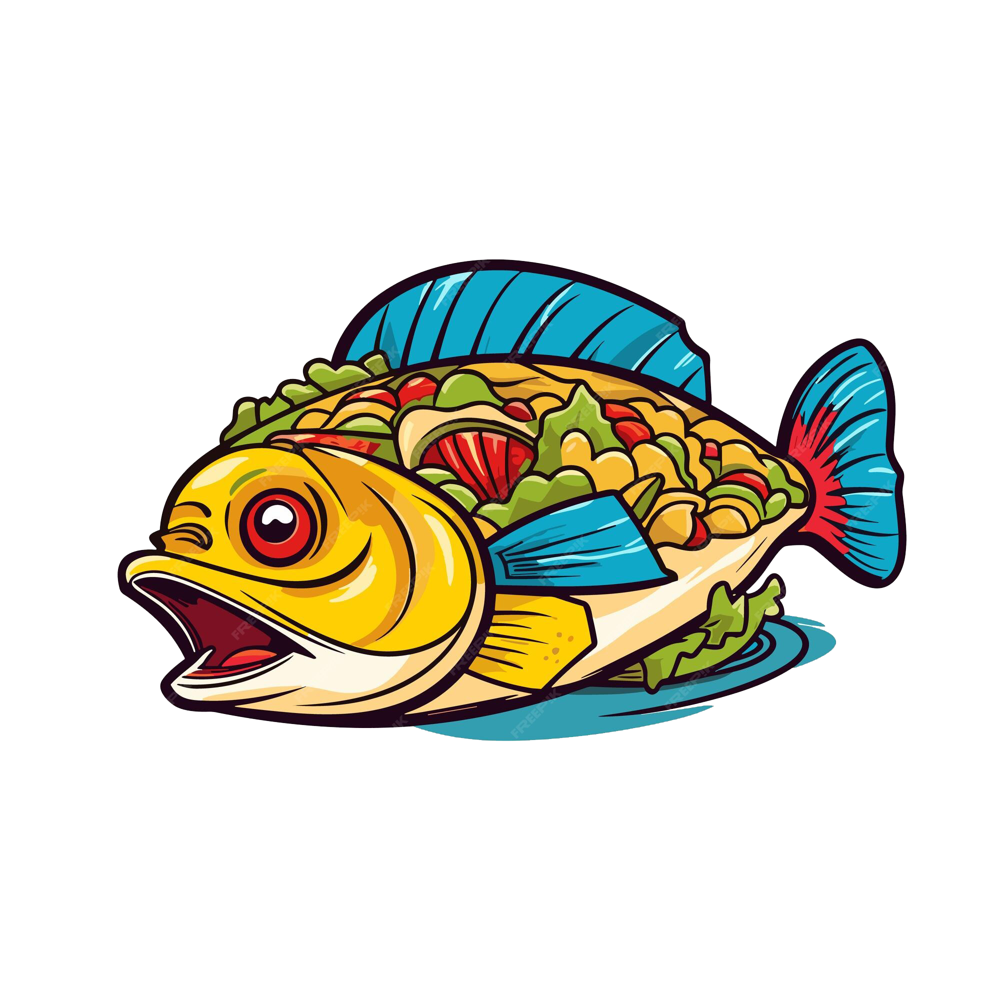

Fish Tacos

Description
Pack in the flavour and lots of veg in this easy fish tacos recipe. It's an easy way to get your family eating more fish, and one portion counts as three of their 5-a-day
Ingredients
- 1 tsp ground cumin
- 1 tsp ground coriander
- 2 tsp smoked paprika
- 2 limes
- 500g white fish fillets, such as cod, haddock, pollack or tilapia, skin and bones removed
- ¼ red cabbage
- 2 large tomatoes
- 2 large avocados
- 2 tbsp vegetable oil
- 8 small corn or wheat tortilla wraps
- small bunch coriander, chopped
- 1 green chilli, finely sliced (optional)
- 100g soured cream
- Chilli sauce, to serve
Instructions
-
Combine the cumin, coriander, paprika and a generous pinch of salt in a large bowl, add the juice from 1 lime and mix well. Toss the fish fillets in the spiced lime paste and set aside while you prepare the salad.
-
Finely slice the cabbage – you can do this by hand or in a food processor if you want it really fine – squeeze over the juice from half a lime and season with a little salt, scrunch the salt and lime into the cabbage and set aside. Chop the tomatoes into small pieces. Stone the avocado, scoop out the soft inside and slice, or if it’s a very ripe avocado you may want to mash it in a bowl with a little lime and salt. Keep all the salad ingredients separate on a board.
-
Heat the grill to high. Line a baking tray with foil and brush with a little oil, place the fish fillets on the tray, pour over any paste from the bowl and brush with a little more oil. Cook the fish close to the grill for 8-10 mins until the fish is cooked and starting to scorch in places, to check its cooked, gently push one of the fillets, it should easily flake when cooked.
-
To serve, spread a little soured cream over each warm tortilla, top with a handful of cabbage, some tomatoes and a few slices of avocado. Flake the fish and add a few big chunks to each tortilla then top with coriander, chilli and chilli sauce.